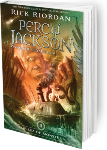

|  |
Percy Jackson and the Sea of MonstersSummary:When Thalia’s tree is mysteriously poisoned, the magical borders of Camp Half-Blood begin to fail. Now Percy and his friends have just days to find the only magic item powerful to save the camp before it is overrun by monsters. The catch: they must sail into the Sea of Monsters to find it. Along the way, Percy must stage a daring rescue operation to save his old friend Grover, and he learns a terrible secret about his own family, which makes him question whether being the son of Poseidon is an honor or a curse. Author: Rick Riordan Publisher: Disney Hyperion |